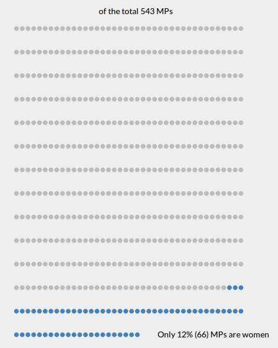
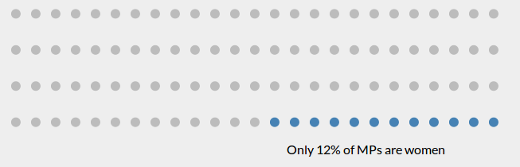
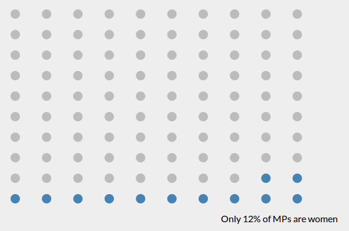
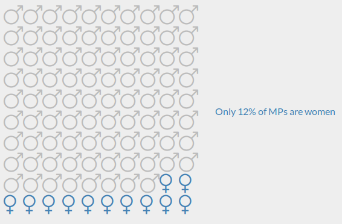

Which of the following visual encoding is best suited to present the big picture?
While working on a way to best represent the stat (only 12% of 543 MP seats are women), I created several prototypes.
- 1st and 2nd encodings are similar except for the size of each dot and the switch in landscape to portrait modes. I found the 2nd to be the better of the two. Each dot represents one MP seat.
- 3rd encoding is a 4x25 dots layout where each dot represents 1% of MP seats.
- 4th encoding is a more uniform, 10x10 dots, layout where each dot represents 1% of MP seats.
- 5th and 6th encodings are similar to 4th encoding, 10x10 dots layout, but bring in gender information where each gender symbol represents respective 1% of MP seats.
1

2

3

4

5

6